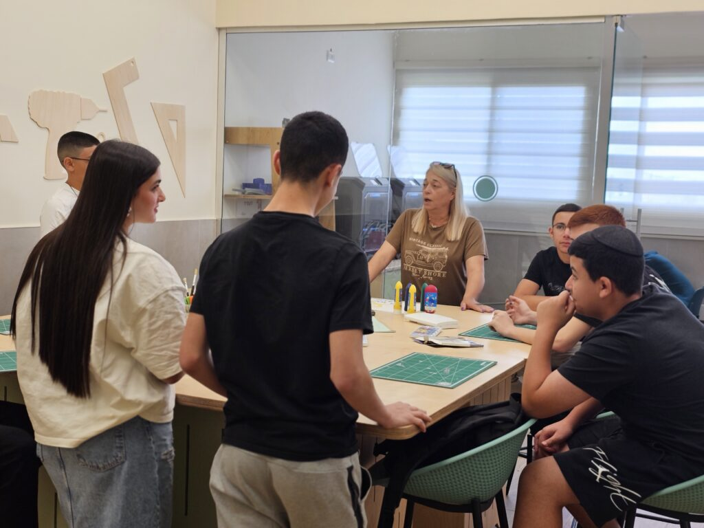

הבית של היועצות והצוותים הטיפוליים — ליווי רגשי, מניעת נשירה וכישורי חיים לחניכי המינהל.

מהשטח · החינוך היוצרהערכה המלאה לצוות הייעוצי — שגרות ליווי, כלים ותרחישים.
מערכים לפי שכבה — זהות, תקשורת, גבולות, מוגנות ורשת.
התוכנית למניעת נשירה בחברה הערבית — איתור, מעקב והתערבות.
אוצר הכלים לפי חמשת אשכולות CASEL — מוכן להפעלה.
תוכניות ההעשרה וטיפוח הלומד — סל התוכניות המאוחד.
שאלוני אקלים ורווחה נפשית + כלי עיבוד מוכנים.